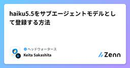
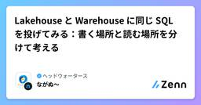
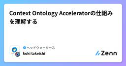
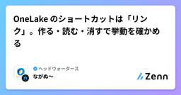
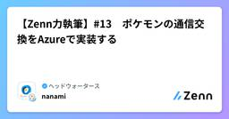
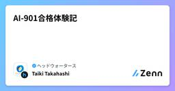
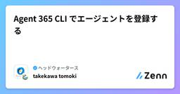

ヘッドウォータースのフィード
https://zenn.dev/p/headwaters
株式会社ヘッドウォータースのテックブログです。 AIエージェント、生成AI、Azure、GitHub Copilot、IoT、XR系などData&AIとApp modernizeに関して幅広く投稿します！
フィード

Helix Foundry~顧客データがつながるオントロジーをローカルで作るOSS
ヘッドウォータースのフィード
会社のデータは、いろいろなサービスに分散しています。顧客情報は業務DB、契約や請求はStripe、認証はWorkOS、行動ログはPostHog。どれも同じ顧客に関係するデータなのに、サービスごとにIDも構造も違います。こうしたデータを接続して、共通の業務モデルとして探索できるようにするOSSがHelix Foundryです。実際にローカルで起動してサンプルデータを入れてみたところ、「オントロジーを作る」という、何をすれば良いかわからない作業が、わかりやすい操作になっていました。一方で、実際のサービスのアクセス情報やキーを入れるとなると、怖い。その両方を感じたので紹介します。 ...
7時間前

Microsoft Foundry で Rubric evaluator による エージェント評価を行う
ヘッドウォータースのフィード
執筆日2026/10/10 最初にAIエージェントの開発では評価が重要です。その際によく登場するのが、ルーブリック（rubric） という言葉です。よくわからないまま知ったかぶりをするのは良くないので、言葉の意味と実装方法を調査しようと思います。 ルーブリック（rubric）とは？教育分野の言葉で、「何をどの程度満たせば何点か」を段階的に書き出した評価基準表を指します。レポートや課題の採点で、観点ごとに「優れている／十分／不十分」といった水準と、その判断基準を明文化したものです。関西大学 ルーブリック作成ガイドAIエージェントの評価では「採点基準表」の意味で使わ...
14時間前

AIエージェントにMicrosoft Fabricを操作させる ― Fabric CLIとSkills for Fabric
ヘッドウォータースのフィード
はじめにClaude Code のようなコーディングエージェントに Microsoft Fabric の開発を手伝わせようとすると、二つの問題があります。一つは操作の手段です。Fabric の操作は Web の画面で行うことが多いので、エージェントが端末から使える手段を別に用意する必要があります。もう一つは知識です。エージェントは、Fabric 固有の API の呼び方や、Notebook の定義ファイルの形式を最初から正確に知っているわけではありません。Fabric には、ワークスペースやアイテムを外部から操作するための Fabric REST API があります。エージェント...
2日前

RAGはもう古い？ 歴史から学ぶRAG→CAG→KAGの進化
ヘッドウォータースのフィード
はじめに先日、RAGについて調べ直していて、「RAGはもう古い」という声が広がっていることに驚きました。「え、RAGってまだ新しい技術じゃなかったっけ」と一瞬戸惑ったのですが、よく調べてみると、RAGが最初に発表されたのは2020年。もう5年以上前の話です。その間にCAG、KAGといった後継の技術が次々と登場して、さらに2026年には長文コンテキストが当たり前になるという別の変化まで重なって、状況はかなり複雑になっていました。これは一度、歴史の流れに沿ってちゃんと整理しておいた方がよさそうだ。そう思ってまとめたのがこの記事です。「RAGって聞いたことはあるけど、ちゃんと説明は...
2日前

【エンジニア1年目向け】Git/GitHub入門 ～基本コマンドからチーム開発まで徹底解説～
ヘッドウォータースのフィード
GitとGitHubは、現在のソフトウェア開発において必須のツールです。チーム開発に参加するうえで、最初に身に付けておくべきスキルの1つです。この記事では、Gitの基本的な仕組み、よく使うコマンド、GitHubを利用したチーム開発の流れを分かりやすく解説します。 Gitでできること ① ファイルの変更履歴を記録できる例えば、Gitを利用しない場合は、資料_20261003.xlsx資料_20261005.xlsx資料_20261007.xlsxのように、変更前の状態を残すためにファイルを複製して管理することがあります。しかし、この方法ではファイル数が増え続け、管...
3日前

haiku5.5をサブエージェントモデルとして登録する方法
ヘッドウォータースのフィード
haiku5.5が本日登場しました。https://www.anthropic.com/claude-haiku-5-5Sonnet 5.5より95%安く、性能はベンチマーク平均で約81%ということで、ちょうどサブエージェントのトークン消費に悩まされていた筆者にとっては超ありがたいニュースでした。ということで早速サブエージェントをhaiku5.5に指定してみたのでその方法を共有します。 結論Claude Code のサブエージェントのモデルは、ユーザー設定ファイル（settings.json）の2か所を足すだけで、Haiku 5.5 に切り替えられます。プロジェクトのファイ...
3日前

論文紹介 IndustrialVLA-Benchを読む：VLA・WAM 6モデルを同一条件で比べると何が見えるのか
ヘッドウォータースのフィード
https://arxiv.org/abs/2609.25562機械学習モデルを使うとき、どれを選べばよいか迷う人は多いと思います。最近注目されているPhysicalAIでも状況は同じです。LLMだとベンチマーク、leaderboardやAI Arena的なものがあって得手不得手が認識されるようになってきました。PhysicalAIまたはVLAでは今まさに論文が出てきているところです。しかし、実用的にはどのVLAが強いのかといった疑問に答えられる論文はまだ多くありません。論文ごとに評価条件が違うためです。そこで本稿では、公開されているVLA 4種とWAM 2種を同じ条件で評価した論...
3日前

Lakehouse と Warehouse に同じ SQL を投げてみる：書く場所と読む場所を分けて考える
ヘッドウォータースのフィード
この記事で分かることMicrosoft Fabric の Lakehouse（レイクハウス）と Warehouse（ウェアハウス）には、どちらも SQL を書く画面があり、見た目もほぼ同じです。そこで同じ種類の SQL（CREATE TABLE と INSERT）を両方に投げてみたら、Lakehouse 側ではエラーになり、Warehouse 側では通りました。結論を先に書きます。Lakehouse の SQL 分析エンドポイントは「読む場所」（SELECT はできるが、行の追加やテーブルの作成はできない）Warehouse は T-SQL で「書ける場所」2つはつなげ...
3日前

Foundry Agent Serviceのプライベートネットワーキングを理解する
ヘッドウォータースのフィード
はじめにMicrosoft Foundry Agent Serviceでは、ネットワーク分離レベルに応じて複数の構成を選択できます。本記事では分かりやすさのため、以下の3つに分類して整理します。BasicStandard with Public NetworkingStandard with Private Networking構成Microsoft公式で近い分類BasicPublic Egress + Microsoft Managed StorageStandard with Public NetworkingPublic Egress...
3日前

Context Ontology Acceleratorの仕組みを理解する
ヘッドウォータースのフィード
「売上を教えて」とAIに質問するとき、必要なのはテーブル名だけでしょうか。キャンセルした注文を含めるか、いつ売上に計上するか、どのテーブルを結合するか。同じデータを使っていても、定義が違えば回答は変わります。AWSが公開している Context Ontology Accelerator（COA） は、データの構造、業務上の意味、計算式、根拠文書を管理し、AIエージェントが参照できるようにするOSSです。公式では、ナレッジグラフ・オントロジー・ルールとAIを組み合わせる「セマンティックなコンテキスト層」と位置づけています。公式README今回は仕組みを理解するため、公式のReact／...
4日前

OneLake のショートカットは「リンク」。作る・読む・消すで挙動を確かめる
ヘッドウォータースのフィード
OneLake のショートカットは、データのコピーではなく「リンク」です。ショートカットそのものを消しても、参照先のデータは残ります。ただし、ショートカットの中のファイルを消すと、参照先の実体も消えます。私も実際に試して、参照先から消えることを確かめました。この記事では、Lakehouse（レイクハウス）を2つ用意し、「作る → 読む → 消す」の順に試した結果を並べます。!対象読者: Microsoft Fabric で Lakehouse を作ったことがあり、次にショートカットを使ってみたい人。前提: 前の記事（Fabric の全体像）の続きで、今回は OneLake ...
5日前

Microsoft Fabric OneLake × Azure AI Search でRAGを構築する
ヘッドウォータースのフィード
はじめにMicrosoft Fabricのレイクハウスに蓄積されたデータを、AIによる自然言語検索のナレッジベースとして活用できることをご存知でしょうか。本記事では、NYCタクシーの乗車データ（約3,000万件）をもとに、Azure AI SearchのOneLake filesインデクサーを使ってFabricのレイクハウスを直接インデックス化し、Fabric NotebookでRAG（Retrieval-Augmented Generation）パイプラインを構築する手順を紹介します。「特定のゾーンのタクシー需要の特徴は？」「チップ率が高いエリアはどこ？」といった自然言語の質...
5日前

【Zenn力執筆】#13 ポケモンの通信交換をAzureで実装する
ヘッドウォータースのフィード
はじめに子供の頃、誰もが一度はキャッチボールをしたことがあると思います。キャッチボールは最も身近な「交換」の一つです。A↓ボールを投げる↓BB↓ボールを投げる↓Aお互いがボールを投げ合うことで交換が成立します。では、Aさんが東京、Bさんが大阪にいたらどうでしょうか。当然ですが、キャッチボールは成立しません。遠く離れた相手と何かを交換するためには、運ぶ仕組み受け取り確認紛失防止といった仕組みが必要になります。このことを考えていたとき、ふと疑問が浮かびました。ポケモンの通信交換はどのような仕組みで実現されているのだろう？ゲーム画...
6日前

AI-901合格体験記
ヘッドウォータースのフィード
はじめに初めてのZenn記事です。AI-901に合格しました！スコアは900/1000点でした。勉強期間は試験当日も含めて3日間、合計7〜8時間くらいです。短期間の勉強で9割取れたので、どんな感じで勉強したかをまとめてみます。 受験前の自分AZ-900は去年取得済みAzureはそこまで触ったことない生成AIは業務でよく使ってる（Copilot Coworkで資料作成、GitHub Copilotでコーディングなど）Copilot Studioは触ったことありFoundryはほぼ触ったことなしAzureには詳しくないけど、ツールとかMCPサーバーとか、生成A...
6日前

Agent 365 CLI でエージェントを登録する
ヘッドウォータースのフィード
執筆日2026/10/4 概要Microsoft FoundryやCopilot Studioで作成したエージェントではないエージェントを、Agent 365 CLI だけでレジストリに登録し、Microsoft 365 管理センターに表示するまでの手順をまとめます。 全体像 何を検証するのかこれまで確認したのは、Microsoft のプラットフォーム（Foundry）で作ったエージェントは勝手にレジストリに出てくる、外部プラットフォーム（Databricks）はコネクタで同期できるの 2 つです。https://zenn.dev/headwaters/arti...
7日前

AI駆動開発とは何か ── 設計・実装・テスト・レビューにAIを組み込む開発プロセス
ヘッドウォータースのフィード
生成AIをソフトウェア開発に導入する際、最も分かりやすい用途はコード生成です。しかし、AIの利用範囲を実装工程だけに限定すると、その効果も限定的になります。本記事では「AI駆動開発」を、要件整理、設計、実装、デバッグ、テスト、レビュー、ドキュメント作成といった開発プロセスに生成AIを組み込み、人間がその出力を検証しながら開発を進める方法として扱います。重要なのは、AIに実装を全面的に委任することではありません。AIを設計案の比較、調査対象の絞り込み、テスト観点の抽出、レビューの一次チェックなどにも利用し、人間は要件・制約・品質基準を定義したうえで、出力を評価します。 コード生成だ...
7日前

動画制作64時間→15分｜Claude×Gemini×VOICEVOXで作るAIエージェント動画自動生成パイプライン
ヘッドウォータースのフィード
この記事では、Zenn記事から動画・サムネイル・YouTubeショートまでを自動生成するパイプラインの作り方を紹介します。時間削減の話だけでなく、「AIエージェントをどう設計し、どこでつまずき、どう直したか」を中心に書きます。キーワードは 「推測より構造化データ」 です。AIに推測させるのをやめて、すでに手元にある正確なデータを渡すだけで、不具合の多くが解決しました。 動画制作に64時間かかっていた課題とAIによる自動化の動機エンジニアの仕事が忙しくなってきて、気づいたらYouTubeの更新が止まっていました。Zennの記事も、気がつけば時事ネタのキャッチアップだけになっていまし...
8日前
Azure AI Foundry ToolBoxを検証する：AI SearchとMCPを束ねた備品管理Agent
ヘッドウォータースのフィード
はじめにMicrosoft Foundryを用いてAI Agentを開発している。Agentに組み込むツールを管理する方法として「ToolBox」があるため、今回は実際に試してみる。この記事では、Azure AI SearchとMCPサーバーをToolBoxに登録し、備品の検索と予約を行うHosted Agentを構築する。 想定読者Microsoft FoundryでAgentを開発している方Agentから複数のツールを利用したい方Azure AI SearchやMCPをAgentに組み込む方法を検討している方 この記事で確認することToolBoxがAg...
8日前
Agent365 - 登録しているエージェントをAPIで検索したい！
ヘッドウォータースのフィード
執筆日2026/10/2 やることAgent365に多数のエージェントを登録しています。毎回ポータルを確認するのは面倒だなと。API経由で確認できないか検証しようかなと。 結論できる 手順 付与手順EntraIDを開くアプリの登録>+新規登録をクリックAPI のアクセス許可>+アクセス許可の追加 をクリックアクセス許可の追加 > Microsoft Graph をクリックアプリケーションの許可 を選び、検索欄にCopilotPackagesと入力します。CopilotPackages.Read.Allにチ...
9日前
同じ PPU なのに、レイクハウスを作れる場所と作れない場所があった — Fabric のライセンス・ワークスペースの種類・ロール
ヘッドウォータースのフィード
この記事で分かることPremium Per User（PPU）のライセンスを持っているのに、マイ ワークスペースでは Lakehouse（レイクハウス）を作れませんでした。出てきたダイアログには、「このテナントのゲスト ユーザーとして Microsoft Fabric の無料試用版を開始できないため」と理由が書かれていました。同じ人・同じライセンスのまま、指定されたワークスペースでは作れました。2か所は、ワークスペースの種類が違っていました（Power BI Pro と Fabric 試用版）。Microsoft Fabric で「このワークスペースで Lakehouse を...
9日前